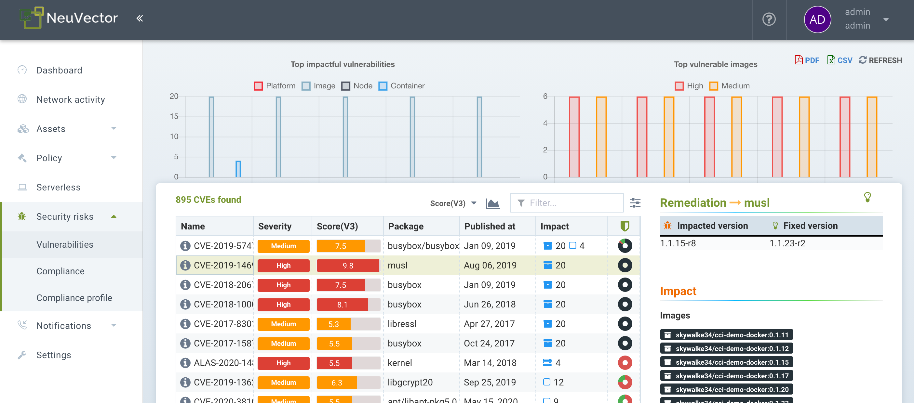
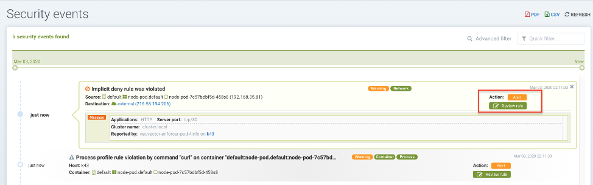

Berichterstattung & Benachrichtigungen
Berichterstellung
Berichte können aus mehreren Menüs in der SUSE® Security Konsole angezeigt und heruntergeladen werden. Das Dashboard zeigt eine Sicherheitsübersicht an, die als PDF heruntergeladen werden kann. Der PDF-Download kann bei Bedarf nach einem Namespace gefiltert werden.

Schwachstellenscans und CIS-Benchmark-Ergebnisse für Registries, Container, Knoten und Plattformen können ebenfalls als CSV-Dateien aus den jeweiligen Menüs in den Abschnitten des Assets-Menüs heruntergeladen werden.
Das Menü Sicherheitsrisiken bietet erweiterte Korrelation, Filterung und Berichterstattung für Schwachstellen und Compliance-Prüfungen. Gefilterte Ansichten können im CSV- oder PDF-Format exportiert werden.

Compliance-Berichte für PCI, HIPAA, DSGVO und andere Vorschriften können gefiltert, angezeigt und exportiert werden, indem die Vorschrift im erweiterten Filter-Popup in Sicherheitsrisiken → Compliance ausgewählt wird.

Ereignisberichterstattung
Alle Ereignisse wie Sicherheit, Verwaltung, Zulassung, Scannen und Risiko werden von SUSE® Security protokolliert und können auch in der Konsole im Menü Benachrichtigungen angezeigt werden. Weitere Informationen finden Sie unten.
Ereignislimits
Alle Ereignisse werden im Speicher gespeichert, um in den Bildschirmen Dashboard und Benachrichtigungen angezeigt zu werden. Es wird erwartet, dass Ereignisse über SYSLOG, Webhook oder andere Mittel gesendet werden, um von einem SIEM-System gespeichert und verwaltet zu werden. Derzeit gibt es ein Limit von 4K für jeden Ereignistyp unten:
-
Risikoberichte (Scannen, gefunden in Benachrichtigungen → Risikoberichte)
-
Allgemeine Ereignisse (Verwaltung, gefunden in den Benachrichtigungen → Ereignisse)
-
Verstöße (Netzwerkverstöße, gefunden in Benachrichtigungen → Sicherheitsereignisse)
-
Bedrohungen (Netzwerkangriffe und Verbindungsprobleme, gefunden in Benachrichtigungen → Sicherheitsereignisse)
-
Vorfälle (Prozess- und Dateiverstöße, gefunden in Benachrichtigungen → Sicherheitsereignisse)
Deshalb werden, sobald das Limit erreicht ist, nur die aktuellsten 4K Ereignisse dieses Typs angezeigt. Dies betrifft sowohl die Benachrichtigungslisten als auch die Anzeigen im Dashboard.
SIEM und SYSLOG
Sie können den SYSLOG-Server und die Webhook-Benachrichtigungen in der SUSE® Security Konsole im Menü Einstellungen → Konfiguration konfigurieren. Wählen Sie das Protokollierungsniveau, TCP oder UDP, und das Format, falls JSON gewünscht ist. CVE-Daten können einzeln für jede CVE gesendet werden und/oder die geschichteten Scannergebnisse enthalten. Sie können auch wählen, Ereignisse in das Pod-Protokoll des Controllers anstelle von oder zusätzlich zu Syslog zu senden. Beachten Sie, dass Ereignisse nur in das Pod-Protokoll des Hauptcontrollers gesendet werden.
Sie können dann Ihre bevorzugten Reporting-Tools verwenden, um SUSE® Security Ereignisse zu überwachen.
Darüber hinaus können Sie Ihren Syslog-Server über die Kommandozeilenschnittstelle wie folgt konfigurieren:
> set system syslog_server <ip>[:port]Die REST-API kann ebenfalls zur Konfiguration verwendet werden.
Beispiel SYSLOG-Ausgabe
Netzwerkverstoß
2020-01-24T21:39:34Z neuvector-controller-pod-575f94dccf-rccmt /usr/local/bin/controller 12 neuvector - notification=violation,level=Warning,reported_timestamp=1579901965,reported_at=2020-01-24T21:39:25Z,cluster_name=cluster.local,client_id=edf1c28d3411a9686e6e0374a9325b6a3626619938d3cf435a9d90075a1ef653,client_name=k8s_POD_node-pod-7c57bdbf5d-dxkn4_default_cdd9cf23-488d-439c-9408-ed98f838c67b_0,client_domain=default,client_image=k8s.gcr.io/pause:3.1,client_service=node-pod.default,server_id=external,server_name=external,server_port=80,ip_proto=6,applications=[HTTP],servers=[],sessions=1,policy_action=violate,policy_id=0,client_ip=192.168.35.69,server_ip=172.217.5.110Prozessverstoß
2020-01-24T21:39:29Z neuvector-controller-pod-575f94dccf-rccmt /usr/local/bin/controller 12 neuvector - notification=incident,name=Process.Profile.Violation,level=Warning,reported_timestamp=1579901965,reported_at=2020-01-24T21:39:25Z,cluster_name=cluster.local,host_id=k43:HF45:AJC6:5RYO:O5OA:KACD:KRT2:M3O6:P3VQ:IC4I:FSRD:P3HJ:ETLS,host_name=k43,enforcer_id=90822bad25eea14180c0942bf30197528bdab8c8237f307cc3059e6bbdb91f7a,enforcer_name=k8s_neuvector-enforcer-pod_neuvector-enforcer-pod-cg8jp_neuvector_d4ef187e-041c-4bc2-9cdc-c563a3feac6c_0,workload_id=d1be6d14f1f2782029d0944040ea8c0ba581991de99df86041205e15abc80209,workload_name=k8s_node-pod_node-pod-7c57bdbf5d-dxkn4_default_cdd9cf23-488d-439c-9408-ed98f838c67b_0,workload_domain=default,workload_image=nvbeta/node:latest,workload_service=node-pod.default,proc_name=curl,proc_path=/usr/bin/curl,proc_cmd=curl google.com,proc_effective_uid=1000,proc_effective_user=neuvector,client_ip=,server_ip=,client_port=0,server_port=0,server_conn_port=0,ether_type=0,ip_proto=0,conn_ingress=false,proc_parent_name=docker-runc,proc_parent_path=/usr/bin/docker-runc,action=violate,group=nv.node-pod.default,aggregation_from=1579901965,count=1,message=Process profile violationZulassungssteuerung
2020-01-24T21:48:31Z neuvector-controller-pod-575f94dccf-rccmt /usr/local/bin/controller 12 neuvector - notification=audit,name=Admission.Control.Violation,level=Warning,reported_timestamp=1579902506,reported_at=2020-01-24T21:48:26Z,cluster_name=cluster.local,host_id=,host_name=,enforcer_id=,enforcer_name=,workload_domain=default,workload_image=nvbeta/swarm_nginx,base_os=,high_vul_cnt=0,medium_vul_cnt=0,cvedb_version=,message=Creation of Kubernetes ReplicaSet resource (nginx-pod-695cd4b87b) violates Admission Control deny rule id 1000 but is allowed in monitor mode [Notice: the requested image(s) are not scanned: nvbeta/swarm_nginx],user=kubernetes-admin,error=,aggregation_from=1579902506,count=1,platform=,platform_version=Um SYSLOG-Ausgaben zu erfassen:
nc -l -p 8514 -o syslog-dump.hex | tee syslog-messages.txtErfasst Nachrichten auf dem Bildschirm, protokolliert sie in eine Datei und protokolliert einen Hexdump.
Benachrichtigungen und Protokolle
In der SUSE® Security Konsole, im Benachrichtigungsmenü, finden Sie Benachrichtigungen für Sicherheitsereignisse, Risiko (Scanning & Compliance)-Ereignisse und allgemeine Systemereignisse.
Benachrichtigungen können als CSV oder PDF aus den Benachrichtigungsmenüs heruntergeladen werden. Darüber hinaus können Paketaufzeichnungen bei Netzwerkangriffen heruntergeladen werden, und Schwachstellenergebnisse können aus dem Benachrichtigungsmenü → Risikoberichte für jedes Scanergebnis heruntergeladen werden.
Sie können die Protokolle auch über die CLI oder die REST API anzeigen.
Sicherheitsereignisse
Verstöße sind Verbindungen, die die Whitelist-Regeln verletzen oder einer Blacklist-Regel entsprechen. Netzwerkverstöße werden erfasst und Quell-IP-Adressen können weiter untersucht werden. Ereignisse von Netzwerkverstößen in der Whitelist erscheinen als "Implizite Ablehnungsregel wurde verletzt", um anzuzeigen, dass die Netzwerkverbindung keiner Whitelist-Regel entsprach.

In dieser Ansicht können Sie Netzwerk-, Prozess- und Dateiereignisse überprüfen und ganz einfach eine Whitelist-Regel für falsch-positive Ergebnisse hinzufügen, indem Sie auf die Schaltfläche Regel überprüfen klicken. Der erweiterte Filter ermöglicht es Ihnen, den anzuzeigenden Ereignistyp auszuwählen.

SUSE® Security überwacht auch kontinuierlich alle Container auf bekannte Angriffe wie DNS, DDoS, HTTP-Smuggling, Tunneling usw. Wenn ein Angriff erkannt wird, wird er hier protokolliert und blockiert (wenn der Container/Dienst zum Schutz eingestellt ist), und das Paket wird automatisch erfasst. Sie können die Paketdetails anzeigen, zum Beispiel:

Neue Regeln für Sicherheitsereignisse hinzufügen
Sie können ganz einfach Regeln (Sicherheitsrichtlinie) hinzufügen, um das erkannte Ereignis zuzulassen oder abzulehnen, indem Sie die Schaltfläche Regel überprüfen auswählen und eine neue Regel bereitstellen.

Dies ist nützlich, wenn falsche Positivmeldungen auftreten oder ein Netzwerk-/Prozessverhalten entdeckt werden sollte, aber während des Entdeckungsmodus nicht aufgetreten ist.
Erweiterte Filter
Erstellen Sie einen erweiterten Filter zum Anzeigen oder Exportieren von Ereignissen, indem Sie jeden allgemeinen Typ auswählen oder Schlüsselwörter eingeben.
-
Netzwerk: Netzereignisse wie Verstöße (implizite Verweigerungsregeln), Bedrohungen.
-
Prozess. Verstöße gegen die Prozess-Whitelist oder verdächtige Prozesse, die erkannt wurden, wie NMAP, SSH usw.
-
Paket. Ein Paket wurde im Container aktualisiert oder installiert, wodurch ein Sicherheitsereignis generiert wurde.
-
Tunnel. Ein Tunnelverstoß wurde erkannt. Tunneling, typischerweise wird DNS-Tunneling verwendet, um Daten zu stehlen. Diese Erkennung erfolgt, indem ein Tunnelprozess gestartet und mit einer Netzwerkaktivität mit dem DNS-Protokoll korreliert wird. Siehe Beispielereignis unten. Beschreibung des Iodine-Tunnels https://github.com/yarrick/iodine
-
Datei. Dateizugriffsverletzung. Entweder wurde auf eine überwachte sensible Datei oder ein Verzeichnis zugegriffen (siehe Liste der Standardüberwachung) oder eine benutzerdefinierte Dateiüberwachungsregel wurde ausgelöst. Verweisen Sie auf die Dateizugriffsregeln-Seite für weitere Informationen.
-
Privileg. Eine Privilegieneskalation wurde im Container oder Host erkannt. Privilegieneskalationen können auf viele Arten durchgeführt werden und sind nicht zu 100 % nachweisbar, sodass dies eine schwierige Bedingung zum Testen ist.
Weitere Integrationen
SUSE® Security hat einen Prometheus-Exporter mit Grafana-Dashboard auf dem SUSE® Security GitHub-Konto https://github.com/neuvector/prometheus-exporter veröffentlicht, der für jede Installation angepasst werden kann. Darüber hinaus sind auf Anfrage auch Beispielintegrationen mit Fluentd verfügbar.
Webhook-Benachrichtigungen können durch Konfiguration des Webhook-Endpunkts in den Einstellungen → Konfiguration gesendet werden. Erstellen Sie dann die entsprechenden Antwortregel(n) im Menü "Richtlinie → Antwortregeln", um den Ereignistyp und den Webhook als Aktion auszuwählen.